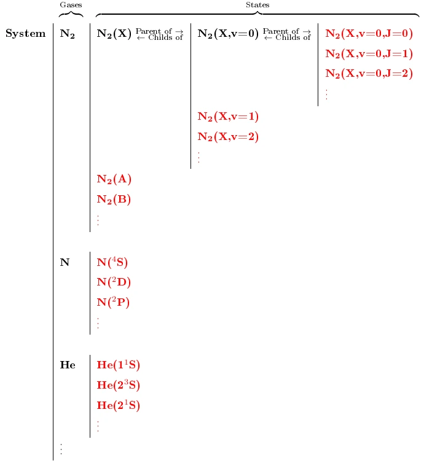
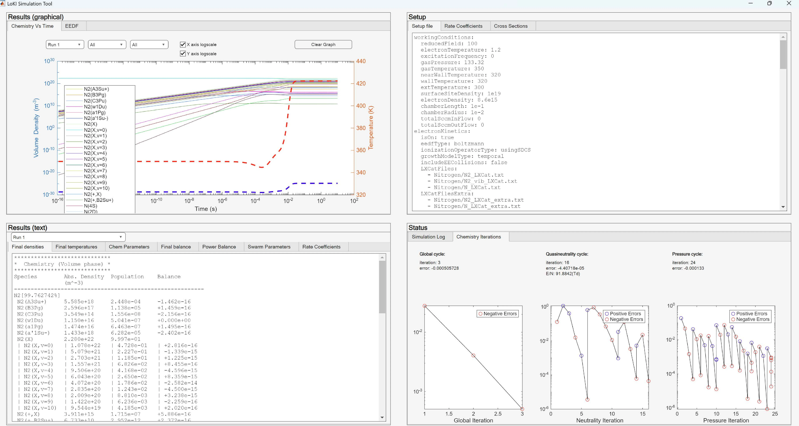
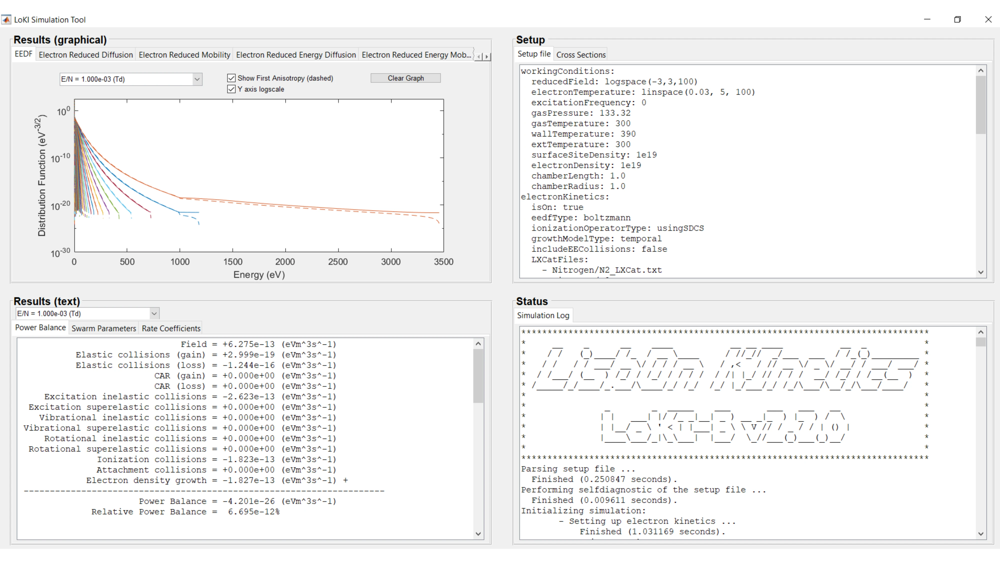

This section provides basic information enabling a user to quickly obtain and run
LoKI-GM for the first time.1
Contents
2.1 Requirements and installation
LoKI-GM is developed under MATLAB®, to benefit from its matrix-based architecture.
The minimum requirements to run the code is a computer with an installation of MATLAB®
(oldest recommended version R2024b; we cannot ensure that all not the features of
LoKI will under different versions).
The hardware requirements for LoKI are not different than those for MATLAB®.
However, for complex gas mixtures or very fine energy grids, a larger RAM is
recommended.
If you are reading this, you probably already have LoKI-GM installed. Nevertheless,
the following summarizes the recommended way to obtain the code.
Alternative installation methods are discouraged, as they may result in incomplete
setups or cause some parts of the code to function incorrectly.
2.1.1 GitHub
You can obtain the latest version of the code from the github URL
LoKI-GM
by downloading the LoKI-GM_26.07 zip-file and extracting it to your local repository.
You can also clone the repository using git [12],
particularly if you want to take part in the development of the code.
2.2 Directory Structure and Data Organization
The LoKI-GM_26.07 folder contains
A subfolder Documentation which includes the user guide (available in
both PDF and HTML formats, although the latter is still a work in progress), the
reference manual and relevant publications;
A subfolder Code containing
Several '*.m' files corresponding to the MATLAB® code, of which
'loki.m' is the main file of the LoKI-GM;
Two files to launch the GUI-based input for LoKI-B: the MATLAB® file
'InputGUILokib.m', which provides a user-friendly graphical user interface
for LoKI-B setup and run; and the batch file 'InputGUILokib.bat', which
allows launching the GUI-based input form a cmd window (or by double-clicking the
corresponding *.bat file).
A subfolder Input, containing the input files required for the
simulations, organised as follows
Default configuration files in text format 'default_lokibc_setup.in',
'default_lokic_pulse_setup.in', 'default_lokib_setup.in' and
'default_lokib_pulse_setup.in', respectively, for LoKI-GM (the first two
file, for steady-state simulations and quasi-stationary simulations,
respectively) and for LoKI-B as standalone tool (the later two, for electron
kinetics stationary simulations and for electron kinetics time-dependent
simulations, respectively) (see sections 2.4, 2.5
and 3);
Default configuration files in json format 'default_lokibc_setup.json',
'default_lokic_pulse_setup.json', 'default_lokib_setup.json' and
'default_lokib_pulse_setup.json', respectively, for LoKI-GM (the first two
file, for steady-state simulations and quasi-stationary simulations,
respectively) and for LoKI-B as standalone tool (the later two, for electron
kinetics stationary simulations and for electron kinetics time-dependent simulations, respectively) (see sections 2.4, 2.5 and 3);
A subfolder Databases with '*.txt' files, containing different
properties (masses, energies of states, atomic/molecular constants, …) for
the gases used in the simulations;
Several subfolders Argon, CO, … Nitrogen,
Oxygen, with '*.txt' files containing
the data needed to perform simulations in different gases or gaseous mixtures:
electron-scattering cross sections, usually obtained from the open-access website
LXCat [13]; kinetics schemes; etc; (see section
4);
setup input files to run swarm simulations;
setup input files to run chemistry simulations.
Subfolders Argon, CO, CO2, Nitrogen, Oxygen contain also
'*.json' files with electron-scattering cross sections (obtained from the
demo version of LXCat 3.0 [14]) and input
setups for swarm simulations.
A subfolder PropertyFunctions, with several '*.m' auxiliary
functions for calculating some predefined distribution of states (Boltzmann, Treanor,
…), the statistical weights of states due to their degeneracy, the energy of
the states according to some models, transport parameters and thermal conductivities
of different species, etc. (see section 5.1);
A subfolder RateCoeffFunctions, organized into one-level subfolders
with self-explanatory names, with several '*.m' auxiliary functions for
calculating the values of the different rate coefficients used in LoKI-C
(see section 5.2).
A subfolder OtherAuxFunctions, with several '*.m' auxiliary
functions, e.g. to calculate some working conditions (see section 5.3);
A A subfolder Utilities, with several scripts to help process or
parse data, etc. (see section 5.4);
A subfolder Output (eventually), where LoKI will write the output files
resulting from the simulations (see section 3.5).
2.3 Ontology
Before presenting LoKI simulations and detailing the syntax of LoKI input files, we
describe the ontology and associated syntax rules used to define individual species and
the gaseous systems considered in the simulations.
2.3.1 Species description
The ontology for species description in LoKI corresponds essentially to the one currently
adopted in LXCat [12]. Note, however, that LoKI now
supports the new ontology adopted in the demo version of LXCat 3.0 [13]
for describing species and reactions when using JSON files. This parsing scheme is expected to
continue evolving. Work is in progress to consolidate the transcription of LXCat data between
versions 2.0 and 3.0, and the corresponding data parsing in numerical codes.
LoKI handles two different types of species: electrons and heavy species (atomic or molecular).
All species are represented by a string without any white-space characters and when
specified in an electron collision they are separated by plus signs (+).
The representation of these species follows the syntax rules below:
Electrons:
can be represented by either characters e or E, which can
appear multiplied by an integer, e.g.2e which is equivalent to
e + e.
Heavy species:
refer to the different atomic or molecular species used in the simulations. For
electron-collision target species, it is mandatory to provide information on its
configuration (see below).
The scheme below shows the general structure to adopt, when representing the configuration
of a particular species:
where
quantity: is an optional field composed only by integers. It represents
the number of species to be considered.
gas name: is a mandatory field composed by letters (English alphabet),
integers and underscore characters (_). It can not start with an integer and is
case sensitive.
state charge: is an optional field composed by plus (+) and minus (-)
characters. It represents the charge of an ionic state and has to terminate with
a comma (,).
electronic level: is a mandatory field composed by letters (English
alphabet), integers, underscore characters (_), plus characters (+), minus
characters (-), asterisk characters (*), apostrophe characters ('), square
brackets ([ ]) and periods (.).
vibrational level: is an optional field composed by letters (English
alphabet), integers, underscore characters (_), plus characters (+), minus
characters (-) and asterisk characters (*). It has to start with the string " ,v=".
rotational level: is an optional field composed by letters (English
alphabet), integers, underscore characters (_), plus characters (+), minus
characters (-) and asterisk characters (*). It has to start with the string " ,J="
and it must necessarily come after the vibrational level field.
IMPORTANT NOTE: The asterisk character (*) is supported only in the
setup file but not in the LXCat auxiliary input files.
Special species:
refer to species, different from electrons and heavy-species,
that can also be included in the description of chemical reactions. The following
lists the different special species recognised by LoKI:
wall: when found as a reactant of a chemical reaction, it identifies the
reaction as a transport process, i.e. the diffusion of the other reactant species
and its collision with the reactor wall;
gas: when found as both a reactant and a product of a chemical reaction, it
identifies this reaction as a "gas stabilised process", i.e. a reaction where
any atomic/molecular state present in the system can act as a stabilising body (example:
A + gas -> B + gas);
surface species: refer to heavy species (atomic or molecular) adsorbed to
the walls (physisorbed or chemisorbed), as well as to vacant sites on the surface, used in
simulations when the chemistry scheme includes a surface kinetics. The representation of
these species follows the same syntax rules as for the (gas) heavy species, adopting a gas
name that MUST start with wall_.
Some examples of surface-species description are given below
wall_empty(F)… a physically vacant surface site;
wall_empty(S)… a chemically vacant surface site;
wall_N(F)… for a nitrogen atom physically adsorbed on surface;
wall_O(S)… for an oxygen atom chemically adsorbed on surface;
This notation represents a recommended (though not mandatory) ontology for describing
surface species, based on the general format wall_species(state)
where the only strict requirement is the use of the prefix wall_.
Alternative ontologies may also be adopted, for example wall_state(species),
but these can limit compatibility with utility scripts such as checkChemFilesStoichiometry,
which performs stoichiometric consistency checks on chemistry files describing the kinetic
scheme (see section 3.3)
2.3.2 Gaseous system description
LoKI handles simulations in any atomic / molecular gas mixture, considering collisions with
target states featuring internal degrees of freedom (electronic, vibrational and rotational),
organized as a system of "Russian puppets"2. The populations
of these states are self-consistently calculated when using the LoKI simulation tool, and are
prescribed by the user when running LoKI-B as standalone tool. Table 1 exemplifies the system
of states for a N2-N-He gas mixture.
Table 1: Example of a gas mixture (childless states are displayed in red).

Here,
System:
is the ensemble of all the gases present in the simulation (N2 ∪ N ∪
He ∪ …).
Gas:
refers to each type of atom or molecule present in the simulation (N2, N, He,
… ). Each gas k has mass Mk and individual density
Nk, being composed by several electronic / vibrational / rotational levels.
State:
specific configurations of electronic (i), vibrational (v) and/or rotational
(J) levels belonging to a given gas (e.g, N2(X), N2(X,v=0),
N2(X,v=0,J=2), N(4S), He(23S), …). Each gas k is
composed by several electronic states ki with absolute density Nki;
each ki-state can include several vibrational states kiv
with absolute density Nkiv, each one composed by several
rotational states kivJ with absolute density
NkivJ.
Parent (state):
state of a certain gas comprising a set of child states. Parent states can be electronic
or vibrational, but not rotational (e.g., N2(X) is the parent of
N2(X,v=0,1,2,…)). Each parent level comprises all of its children.
Child (states):
ensemble of states that share the same parent. Child states can be vibrational or rotational, but not
electronic (e.g., N2(X,v=0,J=0,1,2,…) are the children of N2(X,v=0)).
Sibling (states):
relation between the states that share the same parent (e.g., N2(X,v=0,1,2,…)
are siblings).
Childless (states):
ensemble of the innermost states (without children) (e.g., N2(X,v=0,J=0) is childless).
The previous terminology, allows introducing several de nitions and relations for the particle
densities with the different species (gases / states) in the system.
Total gas density:
total particle density of the heavy species in the system, evaluated as:
where p is the total pressure, kB is the Boltzmann constant and
Tg is the gas temperature (assumed equal for all k-gases in the system).
In the code, this quantity is stored in variables labeled with totalGasDensity.
Individual gas density:
total particle density of a gas in the system. For gas k this is given by Nk,
with .
In the code, this quantity is stored in variables labeled with individualGasDensity.
Gas fraction:
fraction of a gas in the system. For gas k this is given by χk ≡ Nk/N.
Absolute density:
particle (absolute) density of a state. For a generic state i of gas k this is represented
by Nki.
In the code, this quantity is stored in variables labeled with abs.
Population:
density of a state relative to its siblings. For a generic state i of gas k this is represented
by ξki ≡ Nki/Nparent of ki =
Nki /(∑i∈siblingsNki).
Density:
particle density of a state relative to the total gas density. For a generic state i of gas k this is
represented by δki ≡ Nki/N.
In LoKI-B, this quantity is stored in variable density.
From the previous definitions, it is straightforward to obtain the following normalisation conditions
concluding also that the following relationships hold
LoKI uses SI units for all physical quantities, except the energies that are expressed in eV (electron-volt),
the reduced fields that are expressed in Td (Townsend; 1 Td = 10−21V m2), and the flows that
are expressed in sccm (standard cubic centimeter per minute).
2.4 Starting LoKI-GM
LoKI-GM runs upon calling the MATLAB® function loki(setupFile).
The end user interacts with the code by specifying a particular "setup" for the
simulation. This setup is sent to the loki() function through the
required input argument setupFile. As mentioned in section 2.2,
the setup files should be located in [repository folder]/LoKI_26.07/Code/Input/ with
.in extension (this is just a recommendation in order to keep the input
folder organised; the .in setup files are just plain text files);
.json extension (only for simulations using LoKI-B as standalone tool; in
this case it is important to use this extension, for the parsing to work properly).
The distribution of LoKI-GM includes some default configuration files
('default_lokibc_setup.in', 'default_lokib_setup.in',
'default_lokic_pulse_setup.in', 'default_lokib_pulse_setup.in',
'default_lokib_setup.json' and 'default_lokib_pulse_setup.json') for
the benefit of the user. By using one of these files, it is very easy to make a first run
of the code, just following the sequence of steps below. For example, using the
'default_lokibc_setup.in' setup file:
Open MATLAB®
Navigate to the Code folder of your local copy of the repository:
>> cd [repository folder]/LoKI_26.07/Code/);
Execute the following command in the MATLAB® command window:
≫ loki('default_lokibc_setup.in')
The graphical user interface (GUI) should appear showing the solution(s) for
the default setup file, represented in the figure 1

Figure 1: Graphical user interface output, for the default setup-file
of LoKI-GM (stationary coupling between LoKI-B and LoKI-C).
Congratulations! You have now concluded your first LoKI-GM simulation.
To run LoKI-B, a similar procedure should be followed, for example using the
'default_lokib_setup.in' setup file, to obtain the GUI represented in figure 2.

Figure 2: Graphical user interface output, for the default setup-file
of LoKI-B (stationary simulations).
Additionaly, LoKI-B can be configured and executed through a GUI-based input by
using one of the following options:
from the MATLAB® command window:
>> InputGUILokib)
from a cmd window (or by double-clicking the corresponding *.bat file)
>> InputGUILokib.bat)
In both cases, the input-GUI opens as shown in figure 3.
Figure 3: Graphical user interface to configure and execute LoKI-B.
Currently, GUI-based input is available only for LoKI-B; however, future developments
will extend this capability to LoKI-GM.
In order to run the code for different simulations, users just have to call
the loki() function with a different setup file, or a modified version
of the default ones. The details on how to configure the setup file according to your
needs are given in section 3.
2.5 Simulation types available in LoKI-GM
LoKI-GM supports the following types of simulations:
Steady-state simulations, in which LoKI-C and LoKI-B are run in a coupled
manner until steady-state is reached.
In this case, the input file should be configured as follows:
workingConditions, specifying:
reducedField or electronTemperature
gasPressure, gasTemperature, chamberLength,
chamberRadius, totalSccmInFlow, and totalSccmOutFlow
electronDensity and, optionally, dischargeCurrent or
dischargePowerDensity
electronKinetics, specifying:
isOn:true
eedfType:boltzmann or eedfType:prescribedEedf,
consistent with the choice in workingConditions
the relevant data for the selected gas or gas mixture
chemistry, specifying:
isOn:true
convergenceParameter:electronDensity, dischargeCurrent, or
dischargePowerDensity, consistent with the choices in workingConditions
the relevant chemistry for the selected gas or gas mixture
a non-zero value for dischargeTime
postDischargeTime:0
Post-discharge simulations, which start with a coupled LoKI-C/LoKI-B steady-state
calculation, followed by a standalone LoKI-C simulation at E/N = 0 to describe the
time-dependent post-discharge.
The input file should be configured as for steady-state simulations, with the
following modification:
chemistry:
set a non zero value for postDischargeTime
Quasi-stationary simulations, in which LoKI-C runs as a standalone tool using
precomputed lookup tables to obtain electron swarm parameters, rate coefficients, and power
transfer as functions of the electric field (Local Field Approximation, LFA) or
electron mean energy (Local Mean Energy Approximation, LEA).
In this case, the input file should be configured as follows:
workingConditions, specifying:
a time-dependent function for reducedField
gasPressure, gasTemperature, chamberLength, chamberRadius, totalSccmInFlow,
and total SccmOutFlow
electronDensity
electronKinetics, specifying:
isOn:false
chemistry, specifying:
isOn:false
lookupTables with files for swarm, rateCoeff, and
power, and lookUpMethod:localField or lookUpMethod:localEnergy
the relevant chemistry for the selected gas or gas mixture
stateProperties, with ion populations consistent with electronDensity
(to ensure charge neutrality)
Electron kinetics simulations (including swarm analysis), in which case
LoKI-B runs as a standalone tool.
In this case, the input file should be configured as follows:
workingConditions, specifying:
reducedField or electronTemperature, or a time-dependent function
for reducedField
gasTemperature and, optionally, gaspressure and electronDensity
electronKinetics, specifying:
isOn:true
eedfType:boltzmann or eedfType:prescribedEedf,
consistent with the choice in workingConditions
the relevant data for the selected gas or gas mixture
chemistry, specifying:
isOn:false
Depending on whether reducedField is specified as discrete value(s) or as a
time-dependent function, LoKI-B simulations are classified as electron kinetics
stationary simulations or electron kinetics time-dependent simulations,
respectively.
Internally, LoKI-GM uses the following the following flags to configure
the simulations (see Chemistry.m function):
imposeQuasiNeutrality, a Boolean property that determines whether
quasi-neutrality is enforced during temporal integration.
At present, imposeQuasiNeutrality=true is applied at every time-step
in quasi-stationary simulations and post-discharge simulations.
(in the latter case, only between dischargeTime and postDischargeTime;
see section 3.3) In contrast, quasi-neutrality is
not enforced during the temporal integration of steady-state simulations; in
this case, charge neutrality is only guaranteed upon convergence
to steady-state (see Reference Manual [11]).
electronKineticsDependence, a string property that specifies how the
electron kinetics is treated during temporal integration.
The available options are steadyState, quasiStationary and
postDischarge.
solveEedf, a Boolean property that specifies whether the EEDF is
solved self-consistently when updating the electron density during the temporal
integration of post-discharge simulations.
Currently, only solveEedf=false is supported; support for
solveEedf=true is planned for future releases of LoKI-GM.
1This user guide refers to the MATLAB-based LoKI-GM,
which integrates the LoKI-B and LoKI-C codes. Note that the LisbOn KInetics Boltzmann
solver is also available as a standalone open-source tool, offered in two versions: the
MATLAB® implementation LoKI-B, and the C++ implementation LoKI-B++.
2LoKI handles also surface states, when the plasma
kinetics is extended to include plasma-surface interactions.